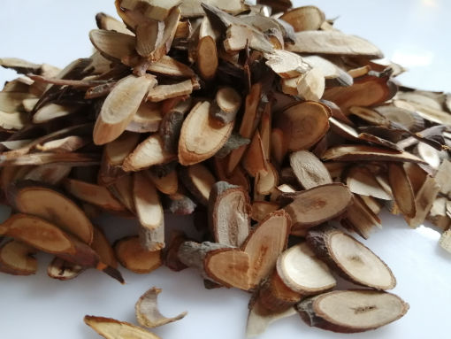

Galeria
zioła w terapiach


W terapii stosowane są zioła chińskie zgodnie z medycyną chińską. Wszystkie formuły ziół pochodzą od Shang Han Lun, Jin Gui Yao Lue, Wen Bing Tiao Bian, Wen Yi Lun (Traktat o chorobach epidemicznych) i są stosowane zgodnie z systemem 6 Syndromów.
Aby dobrać właściwe zioła do terapii, kluczowe jest zauważenie wszystkich występujących syndromów, czyli objawów schorzeń. Ponieważ w trakcie brania ziół zmienia się obraz osoby chorej i niektóre objawy się zmieniają, należy cały czas modyfikować zioła. W niektórych przypadkach wystarczy dodać kilka ziół przyprawowych do gotowania potraw i już dana osoba czuje się lepiej w innym zaś przypadku zioła w mieszankach wieloskładnikowych należy pić tak długo aż schorzenie ustąpi.
Dobór ziół ustalam na podstawie wnikliwego wywiadu po czym analizuję wywiad i dobieram mieszankę najczęściej na okres od 6 do 14. W tym czasie należy się obserwować i na bieżąco informować o procesie zachodzących zmian.
Każde zioło jest odrębnym „bytem” ze swoim charakterem. Co to znaczy? Zioło ma swoją termikę, czyli działa rozgrzewająco, ochładzająco lub neutralnie. Oprócz tego jest ukierunkowane na dany organ, czyli pomaga na przykład odtruć wątrobę lub wzmacnia pracę mózgu. Niekiedy schorzenia są nałożone na siebie i bardzo trudno jest prowadzić taką osobę, ponieważ z jednej strony potrzeba pozbyć się na przykład gorąca, które powoduje uderzenia potów (lub inne objawy) przez ochłodzenie takiej osoby a z drugiej strony należy ją rozgrzać, ponieważ zimno wtargnęło do dolnych partii ciała i osoba ma zimne stopy lub inne objawy zimna według diagnozy chińskiej.
Każda osoba decydująca się na terapię ziołami potrzebuje zrozumieć, że zioła nie blokują jak tabletki odczucia bólu. Zioła wzmacniają organy, odbudowują zniszczone płyny i substancję oraz odprowadzają toksyny. Trzeba zrozumieć, że :
wyniszczony organizm potrzebuje czasu do odbudowy i jeżeli ktoś przez 40 lat był pod wpływem szkodliwych dla zdrowia czynników (zatruta żywność, zatruta woda, szkodliwe promieniowanie, szkodliwe myślenie, szkodliwe leki, szkodliwe warunki bytowe itp.) niech nie oczekuje, że po tygodniu stosowania ziół będzie całkowicie zdrowy.